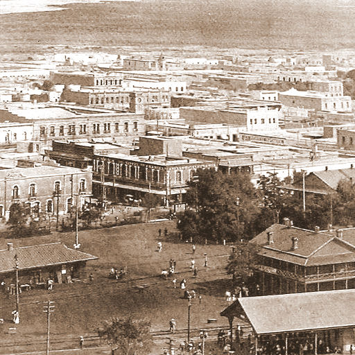
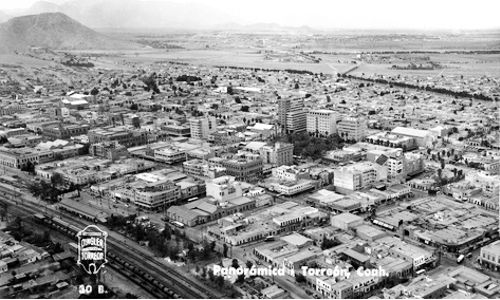
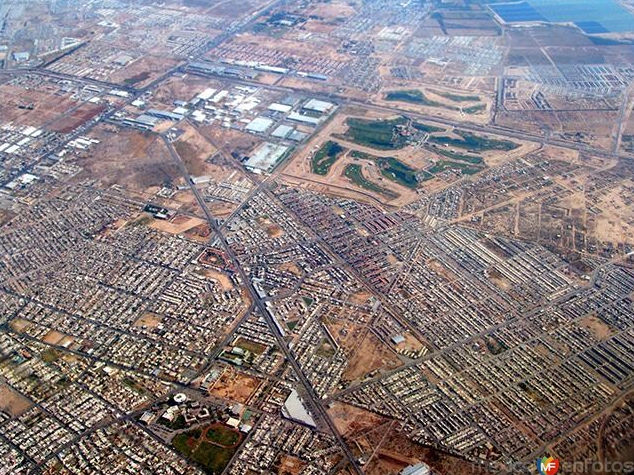

Los procesos en el crecimiento y transformación en las ciudades se han asociado de manera tradicional a un determinado modelo económico que se va fortaleciendo hasta alcanzar nuevos ámbitos y especializándose en servicios que alcanza a varias regiones vecinas y formando así nodos.
La ciudad de Torreón se localiza en el suroeste del estado de Coahuila; una de las principales fortalezas que tiene la ciudad es su conectividad; en cuanto a carreteras se ubica dentro del corredor Matamoros- Mazatlán y Ciudad Juárez – Querétaro, tiene conectividad ferroviaria que data desde 1881 con la línea del Ferrocarril Central Mexicano, que iniciaba en la Ciudad de México y terminaba en la Villa del Paso del Norte atravesando los estados de México, Hidalgo Querétaro, Guanajuato, Jalisco, Aguascalientes, Hidalgo, Zacatecas, Coahuila, Durango y Chihuahua.
La ciudad nace a partir de la visión emprendedora de Sr. Andrés Guillermo Eppen Aschenborn, motivado por el objetivo de fomentar el desarrollo agrícola de la región con el paso del ferrocarril de la central y el Internacional para formar un centro de población.
La construcción de esta línea del ferrocarril inició de Sur a Norte enlazando importantes centros de población, pasando por fértiles valles cuyo cultivo recibió gran impulso detonando el sector agrícola a su paso, en las inmediaciones de su trayecto, principalmente en la Laguna; donde se ubicaba la estación Torreón que entroncaba con el Ferrocarril Internacional Mexicano. (1)
El centro de población se plantea con el trazo ordenado de una retícula con medidas de ochenta y cuatro metros setenta y tres centímetros, por cada lado, y las calles con veintiún metros veinte centímetros de ancho; paralelas a la línea férrea de la central, conformada por 132 manzanas, en la que se destinó la manzana 34 para albergar la plaza principal (Plaza de Armas) la manzana 32 para un mercado, la ubicación de una iglesia (Iglesia de Guadalupe), así nace la Villa del Torreón. (2)

La ciudad continúa con un crecimiento ordenado siguiendo el trazado original de retícula lo que denota una actividad económica estable en los sectores agrícola ganadera, industrial y metalúrgica que desarrolla la actividad bancaria a gran escala, en los años 40´s se construyen áreas habitacionales de densidad baja como son la colonia “Torreón Jardín” planificada y diseñada desde su concepción con servicios públicos de calidad, ordenamiento en sus vialidades y equipamientos. En esa época también se construye el Bosque Venustiano Carranza, espacio que viene a reforzar la continuidad de las plazas y parques públicos que se da desde los primeros trazos, también inicia en el centro la densificación vertical con la construcción de edificios de oficinas y departamentos, así como la construcción del nuevo aeropuerto Francisco Sarabia Tinoco. En los 50´s la construcción de vialidades principales como son el Blvd. Independencia y Diagonal Reforma rompe con la estructura morfológica de la ciudad y se dan los primeros cambios en la misma.
A partir de la década de los años 70 viene un cambio con la visión de fortalecer la actividad económica industrial en la región y se establece el Parque Industrial Lagunero con una superficie de aproximadamente 364 has. en la ciudad de Gómez Palacio ubicada al noroeste de la ciudad de Torreón, con acceso a conectividad carretera y ferroviaria, esto genera una serie de cambios en los asentamientos, como respuesta a la necesidad de vivienda de densidades altas y los usos compatibles que los acompañan para proveer de servicios a los mismos, como respuesta a estos apoyos al sector económico, en la ciudad de Torreón se crean también zonas industriales: al norte “La Ciudad Industrial Torreón”, al sureste se establecen empresas como Caleras de la Laguna y Cementos Mexicanos y al oriente “El Parque Industrial Oriente”, así como el fortalecimiento del sector educativo.
Esta situación socioeconómica, junto con el la conveniencia de compra de tierras en las periferias, fomentó el establecimiento de fraccionamientos habitacionales fuera del límite que contenía en ese momento a la ciudad, el Periférico Raúl López Sánchez, y con ello el cambio de la dinámica urbana tradicional y es punto de partida para la expansión urbana discontinua. Hasta la década de los 90´s, época en la que toma un nuevo impulso el desarrollo industrial con la llegada de empresas transnacionales del sector automotriz y maquilador. Se establece una nueva área industrial catalogada como pesada que daría hospedaje a industrias metalmecánicas. Mientras la ciudad consolidaba los subcentros urbanos en su periferia, el centro histórico empezó con un proceso grave de despoblamiento y degradación.

A partir del año 2000 con los mayores accesos a créditos hipotecarios inicia la llegada de varias compañías inmobiliarias con una oferta de fraccionamientos habitacionales de interés bajo, medio y alto, el crecimiento expansivo de la ciudad, lo determinan: la carretera a San Pedro hacia el norte y al oriente, el corredor Torreón-Matamoros. Los centros alejados del centro de población, crean problemas de accesibilidad, movilidad, decaimiento del espacio público por ser de disfrute privado en los fraccionamientos cerrados, aunado a la fragmentación y segregación social que se genera; lo que trae consigo una dispersión irregular de la traza urbana y nuevamente cambia; con este patrón de crecimiento hasta la fecha.
Actualmente la ciudad crece de una forma dispersa, como lo hemos visto, lo que genera problemas como, deterioro del espacio público, segregación social, baja calidad de vida, deficiencia en el equipamiento urbano, alto costo de los servicios públicos e inseguridad. Por ello se impulsan políticas públicas que detengan esta dispersión que empieza a manifestarse, estamos en un momento importante en el cual la escala de la ciudad tiene una dimensión planificable que nos permite redefinir y priorizar los proyectos fortaleciendo la relación corresponsable entre gobierno y sociedad para transformar las condiciones de calidad de vida y fortalecer el tejido social.
Fotografías
- http://foros.elsiglodetorreon.com.mx/cultura/586788-alguien+sabe.html
- http://megaconstrucciones.net/?construccion=torreon